<title>Raíces 3D</title>
<meta name="claude:viewport-fit-sides" content="cover">
<link rel="preconnect" href="https://fonts.googleapis.com">
<link rel="stylesheet" href="https://fonts.googleapis.com/css2?family=Bricolage+Grotesque:opsz,wght@12..96,500;12..96,700;12..96,800&family=Inter:wght@400;500;600&family=JetBrains+Mono:wght@400;600&display=swap">
<style>
/* Layout: una columna de lectura (~68ch) con láminas a ancho completo; cada sección = una pieza del juego */
:root {
  --bg: #f3f0e6;          /* papel */
  --surface: #e8e4d6;
  --fg: #23291f;          /* tinta verde bosque */
  --muted: #5d6656;
  --line: #cfc9b6;
  --accent: #b5502f;      /* terracota del granero */
  --leaf: #4f7d3f;        /* salvia profunda */
  --wheat: #c9962c;       /* ocre */
  --hud-bg: rgba(28, 33, 24, .78);
  --hud-fg: #f6efdc;
  --font-display: "Bricolage Grotesque", "Segoe UI", system-ui, sans-serif;
  --font-body: "Inter", "Segoe UI", system-ui, sans-serif;
  --font-mono: "JetBrains Mono", ui-monospace, Consolas, monospace;
  --measure: 68ch;
  --radius: 10px;
}
@media (prefers-color-scheme: dark) {
  :root:not([data-theme="light"]) {
    --bg: #171b15; --surface: #20261d; --fg: #ece6d4; --muted: #a8ad9c; --line: #343c30;
    --accent: #e0785a; --leaf: #8fbf6f; --wheat: #e2b45a; color-scheme: dark;
  }
}
:root[data-theme="dark"] {
  --bg: #171b15; --surface: #20261d; --fg: #ece6d4; --muted: #a8ad9c; --line: #343c30;
  --accent: #e0785a; --leaf: #8fbf6f; --wheat: #e2b45a; color-scheme: dark;
}
* { box-sizing: border-box; }
body {
  background: var(--bg); color: var(--fg);
  font: 16px/1.6 var(--font-body);
  padding-left: max(16px, env(safe-area-inset-left, 0px));
  padding-right: max(16px, env(safe-area-inset-right, 0px));
  padding-block: 0 64px;
}
main { max-width: 1120px; margin: 0 auto; display: grid; gap: 72px; }
h1, h2, h3 { font-family: var(--font-display); line-height: 1.1; text-wrap: balance; margin: 0; }
h2 { font-size: clamp(1.7rem, 3.4vw, 2.4rem); font-weight: 800; letter-spacing: -.01em; }
h3 { font-size: 1.15rem; font-weight: 700; }
p { margin: 0; }
.prose { max-width: var(--measure); display: grid; gap: 14px; }
.eyebrow { font: 600 .75rem/1 var(--font-mono); letter-spacing: .12em; text-transform: uppercase; color: var(--accent); }
.mono { font-family: var(--font-mono); font-variant-numeric: tabular-nums; }
section { display: grid; gap: 24px; }
section > header { display: grid; gap: 10px; max-width: var(--measure); }
figure { margin: 0; display: grid; gap: 8px; min-width: 0; }
figure img { width: 100%; height: auto; display: block; border-radius: var(--radius); }
figcaption { font-size: .85rem; color: var(--muted); }
figcaption b { color: var(--fg); font-weight: 600; }

/* ---------- portada ---------- */
.hero { position: relative; margin-top: 24px; border-radius: 14px; overflow: hidden; }
.hero img { width: 100%; display: block; aspect-ratio: 16 / 9; object-fit: cover; }
.hero::after { content: ""; position: absolute; inset: 0; background: linear-gradient(180deg, rgba(0,0,0,0) 45%, rgba(18,22,15,.82) 100%); }
.hero .titulo { position: absolute; left: 0; right: 0; bottom: 0; z-index: 1; padding: clamp(16px, 4vw, 40px); color: #f6efdc; display: grid; gap: 10px; }
.hero h1 { font-size: clamp(2.4rem, 7vw, 5.2rem); font-weight: 800; letter-spacing: -.02em; }
.hero p { max-width: 54ch; font-size: clamp(.95rem, 1.6vw, 1.15rem); color: #e9e1cb; }
.hero .eyebrow { color: #f0c27a; }
.meta { display: flex; flex-wrap: wrap; gap: 8px 20px; font: .8rem var(--font-mono); color: var(--muted); }

/* ---------- fichas ---------- */
.ficha { display: grid; grid-template-columns: repeat(auto-fit, minmax(150px, 1fr)); border-top: 1px solid var(--line); border-bottom: 1px solid var(--line); }
.ficha div { padding: 14px 16px 14px 0; display: grid; gap: 4px; }
.ficha dt { font: 600 .7rem var(--font-mono); letter-spacing: .1em; text-transform: uppercase; color: var(--muted); }
.ficha dd { margin: 0; font-weight: 600; }

.pilares { display: grid; grid-template-columns: repeat(auto-fit, minmax(240px, 1fr)); gap: 20px 32px; padding: 0; margin: 0; list-style: none; counter-reset: p; }
.pilares li { display: grid; gap: 6px; padding-top: 14px; border-top: 2px solid var(--leaf); }
.pilares li p { color: var(--muted); font-size: .95rem; }

.dos { display: grid; grid-template-columns: repeat(auto-fit, minmax(320px, 1fr)); gap: 24px; }
.tres { display: grid; grid-template-columns: repeat(auto-fit, minmax(260px, 1fr)); gap: 20px; }

/* ---------- tablas ---------- */
.tabla { overflow-x: auto; border: 1px solid var(--line); border-radius: var(--radius); }
table { border-collapse: collapse; width: 100%; min-width: 620px; font-size: .92rem; }
th, td { text-align: left; padding: 10px 14px; border-bottom: 1px solid var(--line); vertical-align: top; }
th { font: 600 .72rem var(--font-mono); letter-spacing: .08em; text-transform: uppercase; color: var(--muted); background: var(--surface); }
tr:last-child td { border-bottom: 0; }
td:first-child { font-weight: 600; white-space: nowrap; }
.propio { color: var(--accent); }

/* ---------- maquetas de HUD sobre el arte ---------- */
.maqueta { position: relative; container-type: inline-size; border-radius: var(--radius); overflow: hidden; }
.maqueta img { width: 100%; display: block; aspect-ratio: 1664 / 928; object-fit: cover; }
.hud { position: absolute; color: var(--hud-fg); font: 600 max(9px, 1.45cqw)/1.2 var(--font-body); }
.panel { background: var(--hud-bg); border: 1px solid rgba(246,239,220,.18); border-radius: 1cqw; padding: .9cqw 1.3cqw; backdrop-filter: blur(4px); }
.hud .mono { font-family: var(--font-mono); }
.reloj { top: 2.2cqw; left: 2.2cqw; display: grid; gap: .3cqw; }
.reloj .hora { font: 700 max(13px, 2.6cqw)/1 var(--font-display); }
.reloj small { font-weight: 500; opacity: .8; font-size: max(8px, 1.15cqw); }
.estado { top: 2.2cqw; right: 2.2cqw; display: grid; gap: .6cqw; min-width: 17cqw; }
.monedas { font: 700 max(12px, 2cqw)/1 var(--font-mono); color: #f0c27a; text-align: right; }
.barra { display: grid; grid-template-columns: 5.5cqw 1fr; align-items: center; gap: .8cqw; font-size: max(8px, 1.1cqw); font-weight: 500; }
.barra i { display: block; height: max(5px, .8cqw); border-radius: 99px; background: rgba(246,239,220,.2); overflow: hidden; }
.barra i::before { content: ""; display: block; height: 100%; width: var(--v); background: var(--c); }
.hotbar { left: 50%; transform: translateX(-50%); bottom: 2.2cqw; display: flex; gap: .7cqw; padding: .7cqw; }
.hotbar span { width: 6.2cqw; aspect-ratio: 1; border-radius: .7cqw; background: rgba(246,239,220,.1); display: grid; place-items: center; position: relative; font-size: max(7px, 1cqw); font-weight: 500; text-align: center; }
.hotbar span b { position: absolute; top: .3cqw; left: .5cqw; font: 600 max(7px, .9cqw) var(--font-mono); opacity: .7; }
.hotbar span.on { outline: max(2px, .25cqw) solid #f0c27a; background: rgba(240,194,122,.22); }
.prompt { left: 33%; top: 30%; display: flex; gap: .8cqw; align-items: center; }
.prompt kbd { font: 700 max(9px, 1.3cqw) var(--font-mono); background: var(--hud-fg); color: #1c2118; border-radius: .4cqw; padding: .1cqw .7cqw; }
.toast { right: 2.2cqw; bottom: 9cqw; font-weight: 500; }
.toast em { font-style: normal; color: #9fd16a; }

.catalogo { top: 2.2cqw; left: 2.2cqw; bottom: 2.2cqw; width: 25cqw; display: grid; align-content: start; gap: .9cqw; }
.catalogo .tabs { display: flex; gap: .5cqw; flex-wrap: wrap; }
.catalogo .tabs span { padding: .2cqw .8cqw; border-radius: 99px; background: rgba(246,239,220,.12); font-size: max(7px, 1cqw); font-weight: 500; }
.catalogo .tabs span.on { background: #f0c27a; color: #1c2118; }
.item { display: grid; gap: .25cqw; padding: .8cqw 1cqw; border-radius: .7cqw; background: rgba(246,239,220,.08); }
.item.on { outline: max(2px, .2cqw) solid #7ec8e3; background: rgba(126,200,227,.15); }
.item small { font: 500 max(7px, .95cqw) var(--font-mono); opacity: .85; }
.item small .falta { color: #ff9d85; }
.herr { right: 2.2cqw; bottom: 2.2cqw; display: flex; gap: .6cqw; }
.herr span { padding: .4cqw 1cqw; border-radius: .6cqw; background: rgba(246,239,220,.12); font-size: max(8px, 1.05cqw); }
.herr span kbd { font: 600 max(7px, .9cqw) var(--font-mono); opacity: .7; margin-right: .4cqw; }
.modo { right: 2.2cqw; top: 2.2cqw; font: 700 max(9px, 1.3cqw) var(--font-mono); letter-spacing: .1em; color: #7ec8e3; }

/* ---------- línea de progresión ---------- */
.etapas { display: grid; grid-template-columns: repeat(auto-fit, minmax(200px, 1fr)); gap: 0; border-top: 1px solid var(--line); }
.etapas div { padding: 16px 18px 16px 0; display: grid; gap: 6px; align-content: start; }
.etapas .cuando { font: 600 .78rem var(--font-mono); color: var(--accent); }
.etapas p { font-size: .92rem; color: var(--muted); }

.bucles { display: grid; grid-template-columns: repeat(auto-fit, minmax(230px, 1fr)); gap: 16px; }
.bucle { background: var(--surface); border-radius: var(--radius); padding: 16px 18px; display: grid; gap: 8px; align-content: start; }
.bucle .escala { font: 600 .72rem var(--font-mono); letter-spacing: .1em; text-transform: uppercase; color: var(--leaf); }
.bucle ol { margin: 0; padding-left: 1.2em; font-size: .92rem; display: grid; gap: 2px; }

.lista { margin: 0; padding-left: 1.2em; display: grid; gap: 6px; }
.preguntas { display: grid; grid-template-columns: repeat(auto-fit, minmax(280px, 1fr)); gap: 12px; padding: 0; margin: 0; list-style: none; }
.preguntas li { border: 1px solid var(--line); border-radius: var(--radius); padding: 14px 16px; display: grid; gap: 4px; }
.preguntas li span { color: var(--muted); font-size: .9rem; }
footer { color: var(--muted); font-size: .85rem; border-top: 1px solid var(--line); padding-top: 16px; display: grid; gap: 4px; }
code { font-family: var(--font-mono); font-size: .88em; background: var(--surface); padding: 1px 5px; border-radius: 4px; }
a { color: var(--accent); }
a:focus-visible { outline: 2px solid var(--accent); outline-offset: 2px; }
</style>

<main>
  <div class="hero">
    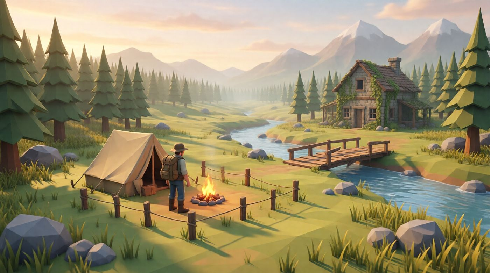
    <div class="titulo">
      <span class="eyebrow">Borrador de diseño · v0.2</span>
      <h1>Raíces 3D</h1>
      <p>Llegas a un valle vacío con una mochila, una tienda y tus ahorros. Talas, recoges piedra, compras tu primera parcela y, estación a estación, conviertes un prado salvaje en la granja que se ve desde lo alto de la colina.</p>
    </div>
  </div>

  <section>
    <div class="meta"><span>15 nov 2026</span><span>three.js · TypeScript · Vite</span><span>Hermano 3D de build-frame (Raíces 2D)</span><span>Antes de escribir código</span></div>
    <dl class="ficha">
      <div><dt>Género</dt><dd>Granja + construcción, cozy</dd></div>
      <div><dt>Mundo</dt><dd>Abierto, valle de 160×160 m</dd></div>
      <div><dt>Cámara</dt><dd>3ª persona + vista de plano</dd></div>
      <div><dt>Estilo</dt><dd>Low-poly, sombreado plano</dd></div>
      <div><dt>Plataforma</dt><dd>Web de escritorio</dd></div>
      <div><dt>Combate</dt><dd>Ninguno, sin game over</dd></div>
    </dl>
  </section>

  <section>
    <header>
      <span class="eyebrow">Pilares</span>
      <h2>Lo que toda función debe reforzar</h2>
      <p>Los cinco pilares de Raíces se mantienen. El mundo abierto añade uno: andar tiene que merecer la pena.</p>
    </header>
    <ul class="pilares">
      <li><h3>Tu granja, tu plano</h3><p>Colocación libre sobre la cuadrícula. Ninguna distribución es la correcta.</p></li>
      <li><h3>Progreso visible</h3><p>En 3D se ve de lejos: al volver del pueblo, la silueta de tu granja ha cambiado.</p></li>
      <li><h3>De las manos a la gestión</h3><p>Empiezas con hacha y azada; acabas con aspersores, ayudantes y molinos.</p></li>
      <li><h3>Calma, no estrés</h3><p>Lo peor que pasa es que un cultivo se detiene un par de días.</p></li>
      <li><h3>Pequeñas sorpresas</h3><p>Ruinas, vecinos, clima y eventos de estación rompen la rutina.</p></li>
      <li><h3>Paseo con recompensa</h3><p>Miradores, ruinas, recursos raros y atajos pagan cada caminata.</p></li>
    </ul>
  </section>

  <section>
    <header>
      <span class="eyebrow">Referencias publicadas</span>
      <h2>Qué tomamos de otros juegos</h2>
    </header>
    <div class="tabla">
      <table>
        <thead><tr><th>Juego</th><th>Tomamos</th><th>Evitamos</th></tr></thead>
        <tbody>
          <tr><td class="propio">Raíces (build-frame)</td><td>Todo el diseño de sistemas y el núcleo lógico por comandos, ya probado</td><td>La limitación del 2D</td></tr>
          <tr><td>My Time at Portia</td><td>Taller y cadenas de procesado en 3D; encargos del pueblo como motor del progreso</td><td>Esperas largas metidas en menús</td></tr>
          <tr><td>Lightyear Frontier</td><td>Colocación libre y cómoda; piezas prefabricadas que hacen una granja bonita sin esfuerzo; lista clara de materiales</td><td>Riego manual repetitivo, que las reseñas señalan como tedioso</td></tr>
          <tr><td>The Ranchers</td><td>Mundo abierto rural con cultivos y ganado</td><td>Escala tan grande que vacía el mapa</td></tr>
          <tr><td>Farming Simulator 25</td><td>Sensación de gran explotación al final</td><td>Realismo y maquinaria compleja</td></tr>
          <tr><td>Dragon Quest Builders 2</td><td>Los vecinos usan lo que construyes</td><td>Construcción por bloques sueltos</td></tr>
          <tr><td>Valheim</td><td>Sensación de «mi base» dentro de un mundo grande</td><td>Supervivencia y combate</td></tr>
          <tr><td>Tiny Glade · Townscaper</td><td>Construir da placer por sí mismo: las piezas se adaptan solas</td><td>—</td></tr>
        </tbody>
      </table>
    </div>
  </section>

  <section>
    <header>
      <span class="eyebrow">El mundo abierto</span>
      <h2>Un valle pequeño y denso, no uno grande y vacío</h2>
      <p>8×8 parcelas de 20×20 m, rodeadas de colinas con bosque y cerradas por montañas. El río cruza el valle y el pueblo queda al sur, a un minuto andando. Cruzar el valle a pie lleva entre 60 y 90 segundos.</p>
    </header>
    <figure>
      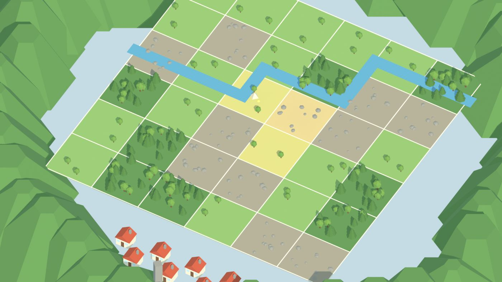
      <figcaption><b>Boceto en Blender (6×6 para leerlo mejor).</b> Verde claro: prado fértil. Verde oscuro: bosque (madera). Gris: rocosa (piedra, barata). Azul: río (arcilla y agua). Amarillo: tus parcelas, con la tienda del día 1. Las parcelas se compran solo junto a las tuyas.</figcaption>
    </figure>
  </section>

  <section>
    <header>
      <span class="eyebrow">Cámara y control</span>
      <h2>Dos modos: vivir la granja y planificarla</h2>
      <p>La transición entre ambos es el momento clave del juego: la cámara sube desde la espalda del granjero hasta ver la granja desde arriba, el mundo se desatura y aparece la cuadrícula.</p>
    </header>
    <figure>
      <div class="maqueta">
        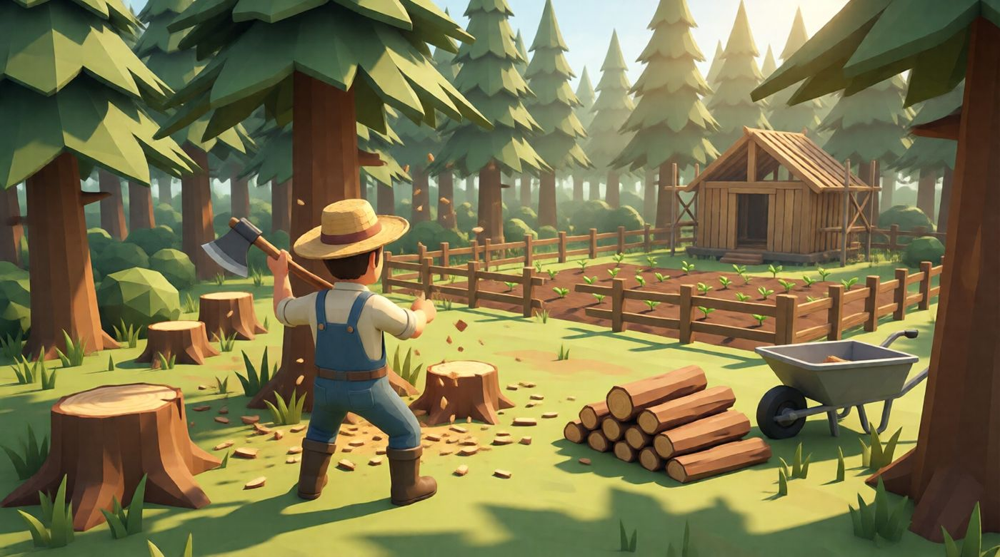
        <div class="hud panel reloj"><span class="hora mono">08:40</span><small>Día 3 · Primavera · Soleado</small></div>
        <div class="hud panel estado">
          <span class="monedas">1.240 ◉</span>
          <span class="barra">Energía<i style="--v:68%;--c:#9fd16a"></i></span>
          <span class="barra">Bienestar<i style="--v:82%;--c:#f0c27a"></i></span>
        </div>
        <div class="hud panel prompt"><kbd>E</kbd> Talar pino · 3 golpes</div>
        <div class="hud panel toast">+4 madera <em>· leñera 46/100</em></div>
        <div class="hud panel hotbar">
          <span class="on"><b>1</b>Hacha</span><span><b>2</b>Pico</span><span><b>3</b>Azada</span><span><b>4</b>Regadera</span><span><b>5</b>Hoz</span><span><b>6</b>Semillas</span>
        </div>
      </div>
      <figcaption><b>Modo Vida · maqueta de HUD sobre arte de ComfyUI.</b> Tercera persona libre por detrás del hombro, orbitable con el ratón. WASD para andar y Mayús para correr; sin montura en el MVP. Reloj y estación arriba a la izquierda, monedas, energía y bienestar arriba a la derecha, herramientas abajo.</figcaption>
    </figure>
    <figure>
      <div class="maqueta">
        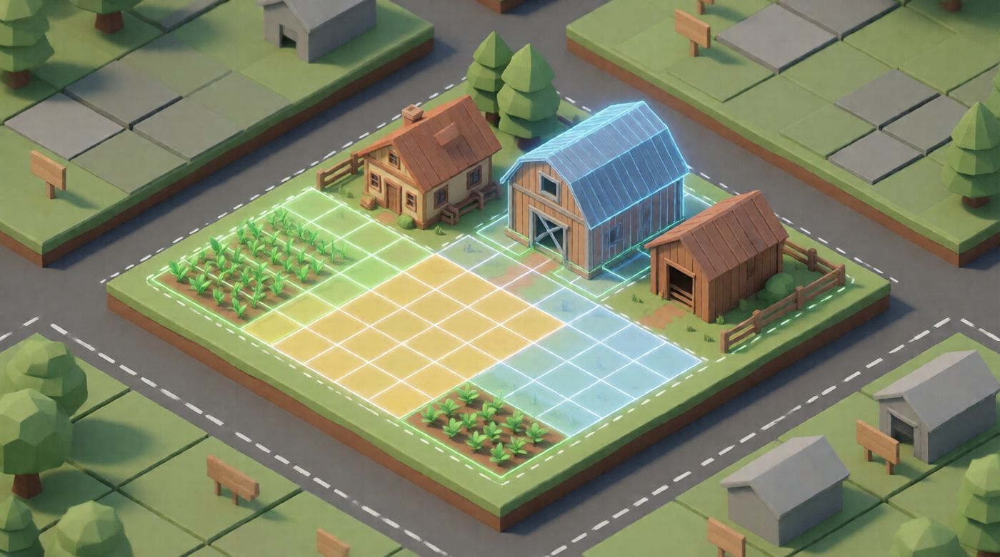
        <div class="hud panel catalogo">
          <div class="tabs"><span class="on">Granja</span><span>Almacén</span><span>Taller</span><span>Decoración</span></div>
          <div class="item"><span>Caja de envío</span><small>50 ◉ · 20 madera</small></div>
          <div class="item"><span>Cobertizo</span><small>500 ◉ · 50 madera</small></div>
          <div class="item on"><span>Granero · 8×6</span><small>2.500 ◉ · 40 tablones · 60 piedra · <span class="falta">10 metal (tienes 4)</span></small></div>
          <div class="item"><span>Aserradero</span><small>1.200 ◉ · 80 madera · 30 piedra</small></div>
        </div>
        <div class="hud modo">MODO PLANO · PAUSA</div>
        <div class="hud panel herr"><span><kbd>R</kbd>Rotar</span><span><kbd>M</kbd>Mover</span><span><kbd>Z</kbd>Zonas</span><span><kbd>V</kbd>Vallas</span><span><kbd>C</kbd>Caminos</span><span><kbd>X</kbd>Demoler</span></div>
      </div>
      <figcaption><b>Modo Plano · maqueta.</b> Cámara cenital orbital, tiempo en pausa. Se pintan zonas gratis (verde cultivo, amarillo vivienda, azul almacén) y se colocan edificios con un fantasma azul si cabe o rojo si no. El catálogo muestra qué material falta. Las vallas y los caminos se dibujan arrastrando y se adaptan solos.</figcaption>
    </figure>
  </section>

  <section>
    <header>
      <span class="eyebrow">Bucles de juego</span>
      <h2>Del golpe de hacha a la explotación</h2>
    </header>
    <div class="bucles">
      <div class="bucle"><span class="escala">Minuto</span><ol><li>Moverse</li><li>Golpear, plantar o regar</li><li>Partícula, sonido y objeto a la mochila</li></ol></div>
      <div class="bucle"><span class="escala">Día · ~15 min</span><ol><li>Despertar y revisar la granja</li><li>Trabajar gastando energía</li><li>Ir al pueblo a vender y comprar</li><li>Planificar en Modo Plano</li><li>Dormir: se guarda la partida</li></ol></div>
      <div class="bucle"><span class="escala">Estación · 21 días</span><ol><li>Elegir cultivos de la estación</li><li>Ampliar parcelas y zonas</li><li>Evento o feria</li><li>Desbloqueos</li></ol></div>
      <div class="bucle"><span class="escala">Largo plazo</span><ol><li>Comprar el valle</li><li>Automatizar</li><li>Proyectos del pueblo</li><li>Colección y decoración</li></ol></div>
    </div>
  </section>

  <section>
    <header>
      <span class="eyebrow">Progresión</span>
      <h2>La misma parcela, de campamento a granja</h2>
    </header>
    <figure>
      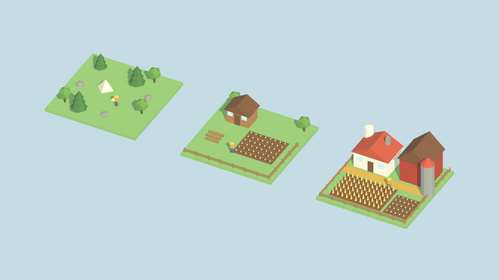
      <figcaption><b>Boceto en Blender.</b> Izquierda a derecha: día 1, mes 1 y año 2.</figcaption>
    </figure>
    <div class="etapas">
      <div><span class="cuando">Día 1</span><h3>Campamento</h3><p>Tienda, hoguera, herramientas viejas y 1.100 monedas. Talar, picar, comprar la primera parcela.</p></div>
      <div><span class="cuando">Mes 1</span><h3>Asentamiento</h3><p>Cobertizo, caja de envío, los primeros bancales y una valla. Segunda parcela.</p></div>
      <div><span class="cuando">Año 1</span><h3>Granja</h3><p>Casa, granero, aserradero, gallinero y camino. Encargos del pueblo y procesado.</p></div>
      <div><span class="cuando">Año 2+</span><h3>Explotación</h3><p>Molino, silo, invernadero, aspersores y ayudantes. Se juega sobre todo en Modo Plano.</p></div>
    </div>
    <figure>
      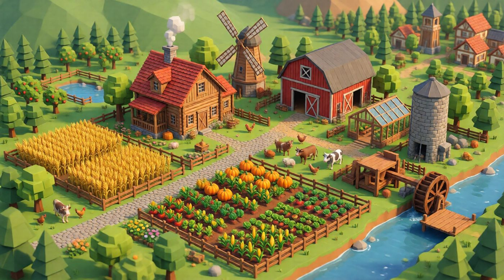
      <figcaption><b>Objetivo visual del final de partida (ComfyUI).</b> Lo que el jugador debería poder construir tras dos o tres años de juego.</figcaption>
    </figure>
  </section>

  <section>
    <header>
      <span class="eyebrow">Construcción</span>
      <h2>Edificios con niveles que crecen en el mismo sitio</h2>
      <p>Cuadrícula de 1 m, rotación en pasos de 90° y terreno nivelado. La obra se ve: cimientos, andamios, paredes y tejado. El carpintero trabaja de día y, si le ayudas, termina antes.</p>
    </header>
    <figure>
      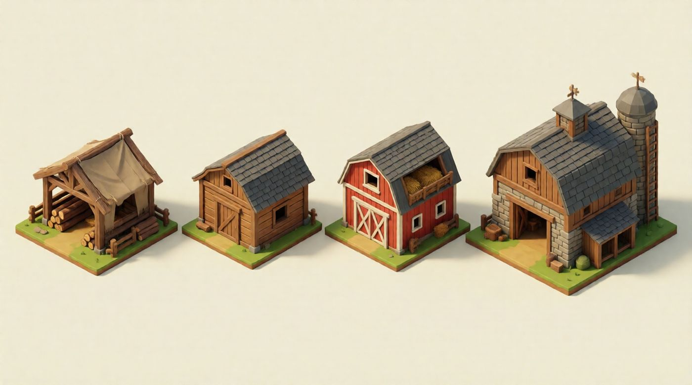
      <figcaption><b>Niveles de un mismo edificio (ComfyUI).</b> Refugio de lona → cobertizo → granero → granero grande con silo.</figcaption>
    </figure>
    <div class="dos">
      <figure>
        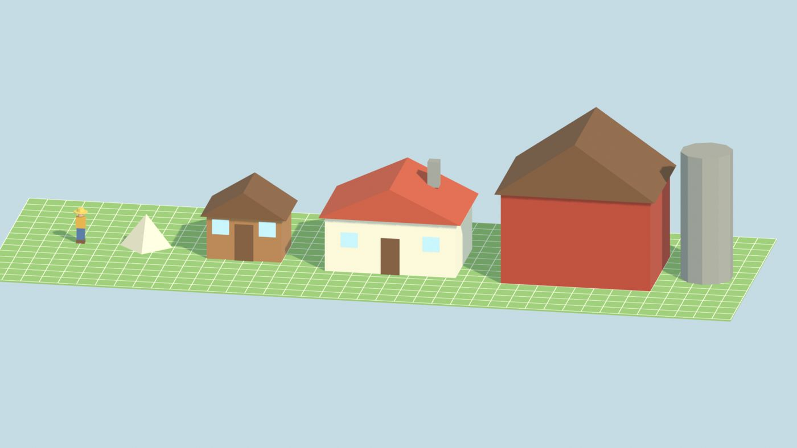
        <figcaption><b>Escala en Blender (cuadrícula de 1 m).</b> Granjero de 1,75 m frente a la tienda, el cobertizo, la casa, el granero y el silo.</figcaption>
      </figure>
      <div class="tabla">
        <table style="min-width:0">
          <thead><tr><th>Edificio</th><th>Huella</th><th>Altura</th></tr></thead>
          <tbody class="mono">
            <tr><td>Tienda</td><td>3×3 m</td><td>1,8 m</td></tr>
            <tr><td>Cobertizo</td><td>4×3 m</td><td>3,5 m</td></tr>
            <tr><td>Casa nv. 1</td><td>7×5 m</td><td>5 m</td></tr>
            <tr><td>Granero</td><td>8×6 m</td><td>8 m</td></tr>
            <tr><td>Silo</td><td>3×3 m</td><td>8 m</td></tr>
          </tbody>
        </table>
      </div>
    </div>
  </section>

  <section>
    <header>
      <span class="eyebrow">Recursos</span>
      <h2>Lo que eliges comprar decide lo que puedes construir</h2>
      <p>Los recursos existen en el mundo: los árboles caen y dejan tocón, las rocas se rompen y la leñera se llena de troncos a la vista. Todo se puede comprar en el pueblo, pero más caro que producirlo.</p>
    </header>
    <div class="tabla">
      <table>
        <thead><tr><th>Nivel</th><th>Recurso</th><th>De dónde sale</th><th>Herramienta o edificio</th></tr></thead>
        <tbody>
          <tr><td>Básico</td><td>Madera · piedra · fibra · arcilla</td><td>Bosque · rocosa · prado · río</td><td>Hacha · pico · hoz · pala</td></tr>
          <tr><td>Elaborado</td><td>Tablones · ladrillos · cuerda</td><td>Procesando básicos</td><td>Aserradero · horno · telar</td></tr>
          <tr><td>Escaso</td><td>Metal · cristal · piezas</td><td>Ruinas y tienda del pueblo</td><td>—</td></tr>
          <tr><td>Llave</td><td>Planos</td><td>Vecinos, proyectos, exploración</td><td>—</td></tr>
        </tbody>
      </table>
    </div>
  </section>

  <section>
    <header>
      <span class="eyebrow">Mundo vivo</span>
      <h2>Estaciones, pueblo y personaje</h2>
    </header>
    <figure>
      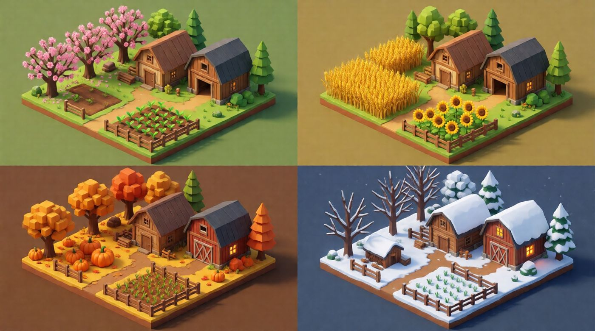
      <figcaption><b>Cuatro estaciones (ComfyUI).</b> El 3D permite que la nieve se acumule en los tejados, que la niebla aparezca por la mañana y que las ventanas se iluminen de noche.</figcaption>
    </figure>
    <div class="dos">
      <figure>
        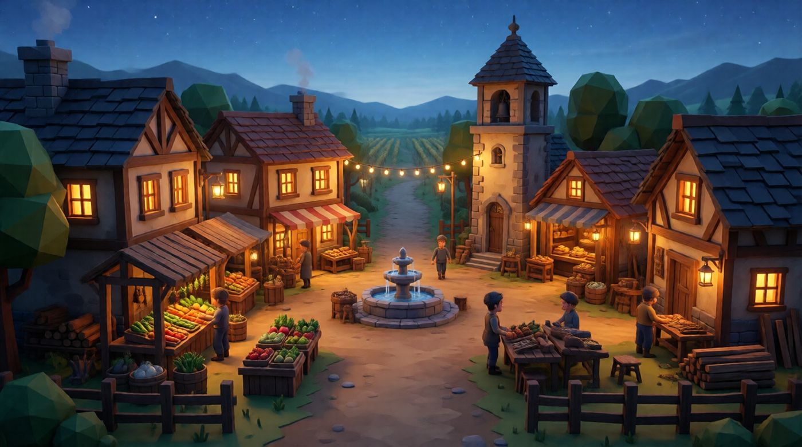
        <figcaption><b>El pueblo al anochecer.</b> Mercado, panadería, carpintero y campanario. Los proyectos del pueblo cambian sus edificios a la vista.</figcaption>
      </figure>
      <figure>
        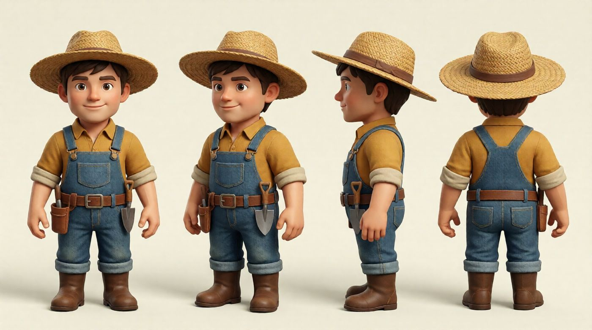
        <figcaption><b>Granjero en cuatro vistas.</b> Referencia para modelarlo en Blender. El modelo final será más low-poly que este concepto.</figcaption>
      </figure>
    </div>
  </section>

  <section>
    <header>
      <span class="eyebrow">Técnica propuesta</span>
      <h2>Partir del núcleo de Raíces y cambiar la vista</h2>
      <p>El núcleo de Raíces ya es lógica pura, determinista y por comandos, sin depender de Phaser. Las casillas 2D pasan a ser la cuadrícula de 1 m del suelo 3D.</p>
    </header>
    <div class="tabla">
      <table>
        <thead><tr><th>Capa</th><th>Elección</th><th>Motivo</th></tr></thead>
        <tbody>
          <tr><td>Render</td><td>three.js (WebGL2)</td><td>Solo web; WebGPU más adelante</td></tr>
          <tr><td>Lógica</td><td>Copia de <code>src/core</code> de Raíces, con sus tests</td><td>Proyecto independiente; cada juego evoluciona por su lado</td></tr>
          <tr><td>UI</td><td>Preact sobre el canvas</td><td>Reutilizar componentes y textos</td></tr>
          <tr><td>Mundo</td><td>Chunks de 20×20 m, <code>InstancedMesh</code>, LOD</td><td>Miles de plantas y árboles sin coste</td></tr>
          <tr><td>Sombras</td><td>Sombras en cascada cerca de la cámara</td><td>60 fps en un PC medio</td></tr>
          <tr><td>Arte</td><td>Blender → <code>.glb</code> con meshopt; paleta en una sola textura</td><td>Un material compartido, pocas llamadas de dibujo</td></tr>
          <tr><td>Prototipos 3D</td><td>ComfyUI + Hunyuan3D 2.1 (ya instalado)</td><td>Modelo rápido desde el concepto, retopología en Blender</td></tr>
          <tr><td>Guardado</td><td>IndexedDB (ADR 0001 de Raíces)</td><td>Reutilizar tal cual</td></tr>
        </tbody>
      </table>
    </div>
  </section>

  <section>
    <header>
      <span class="eyebrow">MVP 3D</span>
      <h2>La primera versión jugable</h2>
    </header>
    <div class="dos">
      <ol class="lista">
        <li>Valle 3D con terreno, río, árboles y rocas, recorrible en tercera persona.</li>
        <li>Ciclo de día y noche con el tiempo de Raíces.</li>
        <li>Talar y picar: madera y piedra al inventario.</li>
        <li>Comprar parcelas con mojones físicos.</li>
        <li>Modo Plano: zonas y tres edificios con fantasma y obra visible.</li>
        <li>Modo Plano: vallas y caminos dibujados arrastrando.</li>
        <li>Arar, plantar, regar y cosechar cinco cultivos de primavera.</li>
        <li>Vender en la caja de envío y dormir para guardar.</li>
      </ol>
      <div class="prose">
        <h3>Fuera del MVP</h3>
        <p style="color:var(--muted)">Animales, vecinos con amistad, procesado, decoración libre (setos, farolas, bancos), estaciones completas, clima avanzado, carro, controles táctiles y online.</p>
      </div>
    </div>
  </section>

  <section>
    <header>
      <span class="eyebrow">Decidido · 15 nov 2026</span>
      <h2>Decisiones tomadas</h2>
    </header>
    <ul class="preguntas">
      <li><b>Código</b><span>Proyecto nuevo con una copia del núcleo de Raíces.</span></li>
      <li><b>Plataforma</b><span>Solo web, navegador de escritorio con teclado y ratón.</span></li>
      <li><b>Cámara del Modo Vida</b><span>Tercera persona libre, orbitable.</span></li>
      <li><b>Construcción en el MVP</b><span>Edificios prefabricados con niveles, más vallas y caminos dibujados.</span></li>
      <li><b>Montura</b><span>No en el MVP; un carro en una fase posterior.</span></li>
      <li><b>Nombre provisional</b><span>Raíces 3D.</span></li>
    </ul>
    <p style="color:var(--muted)">Siguen abiertos el nombre del valle y si el juego tiene una meta final o es infinito.</p>
  </section>

  <footer>
    <span>Arte conceptual: ComfyUI con Qwen-Image 2512 (4 pasos, semillas 1101–8808). Bocetos 3D: Blender 5.2, script <code>borrador/blender/boceto.py</code>.</span>
    <span>Documento de diseño completo: <code>GDD.md</code> en W:\build-city.</span>
  </footer>
</main>
